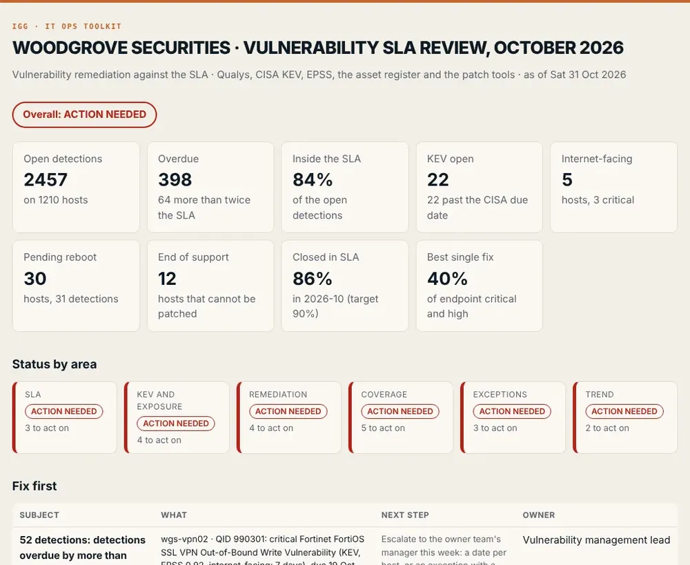

Un equipo de VPN volvió de un cambio por garantía con un firmware antiguo y una vulnerabilidad explotada desde hace dos años, y treinta servidores que instalaron su parche hace una semana siguen siendo vulnerables porque nadie acordó el reinicio. Así lo detecta la revisión de corrección de vulnerabilidades que acompaña a este post, una herramienta de código abierto que se ejecuta con datos de ejemplo de un bróker inventado con unos 400 servidores y 1.200 equipos con Windows 11 repartidos entre seis equipos responsables, con los problemas puestos a propósito.
El escáner dice cuántas vulnerabilidades hay, pero no si se cumplen los plazos de corrección prometidos por severidad. Esos plazos se suelen seguir en una hoja de cálculo actualizada a mano, y las cifras esconden los motivos. La herramienta da a cada detección abierta de Qualys su plazo: 15, 30, 90 o 180 días según la severidad, y 7 días si está en el catálogo KEV de CISA de vulnerabilidades que se sabe que se explotan, tiene un EPSS alto, una estimación de la probabilidad de que se explote, o es crítica en un equipo expuesto a internet.
Puestos de trading vulnerables otra vez por una imagen antigua
Después, cada detección queda en plazo, a punto de vencer en 7 días, vencida o vencida más del doble del plazo. La revisión explica por qué no se cierran las correcciones. Los equipos de la sala de trading vuelven a ser vulnerables tras reinstalarse desde una imagen maestra antigua, la copia base con la que se instalan. Unos servidores con un sistema operativo que ya no se puede parchear están cubiertos por una excepción que caducó hace un mes.
La revisión comprueba también la cobertura, porque el reloj empieza cuando el escáner encuentra la vulnerabilidad: equipos que Qualys no analiza o no analiza desde hace dos semanas, equipos sin responsable y agentes de parcheo que fallan.
Una actualización del navegador es el 40 % de las vulnerabilidades críticas y altas de los portátiles
Una actualización del navegador, retenida por una versión fijada, supone el 40 % de todas las vulnerabilidades críticas y altas de los portátiles. La herramienta ordena las diez actualizaciones o paquetes que más riesgo eliminan. Por equipos, uno cierra la mitad de sus correcciones a tiempo mientras el resto supera el 90 %.
La tendencia muestra el porcentaje cerrado dentro del plazo en cada uno de los tres últimos meses y el tiempo medio de corrección por severidad.
Cómo usarlo con datos reales
El repositorio incluye un exportador de solo lectura en PowerShell para la API de Qualys, el catálogo KEV de CISA, la API de EPSS e Intune. Funciona con Python y solo la librería estándar, y genera un informe web con un estado por área, una lista semanal de críticas, un informe mensual y ficheros CSV de cada área. La demo tiene casi 7.000 detecciones de Qualys, el inventario de activos, el estado de parcheo de Tanium e Intune y siete excepciones, todo ficticio, además de 15 tests y un runbook.
De dónde sale
La herramienta nace de usar Qualys y Tanium para la gestión de vulnerabilidades y parches en una sede, Microsoft Defender, e Intune y MECM en cogestión, incluida la migración a Windows 11 de una oficina con sala de trading; de la gestión de riesgos de ciberseguridad y el seguimiento de la corrección; de ISO 27001, NIS2 y NIST CSF y sus auditorías; y del CAB como responsable del proceso de cambios. La lección que hay detrás: instalado no es corregido hasta que el equipo se reinicia, y una excepción es una decisión con fecha de caducidad, no una forma de poner el informe en verde.
¿Quieres llevarlo a tu entorno o adaptarlo a tu caso? Escríbeme y lo vemos.
Tech Career Lab · newsletter
¿Te ha servido? Cada dos semanas envío una idea práctica para perfiles IT: LinkedIn, proyectos, networking y procesos de selección.
Apúntate y llévate las 33 ideas →